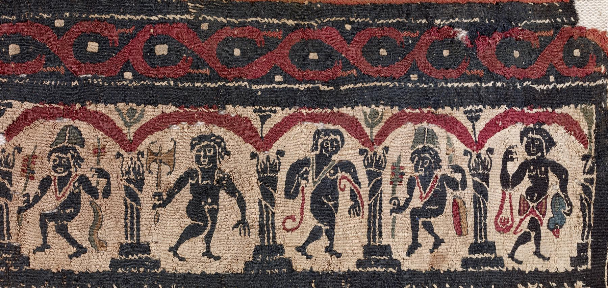

Dionysia
The Dionysia was a large festival in ancient Athens in honor of the god Dionysus, the central events of which were the theatrical performances of dramatic tragedies and, from 487 BC, comedies. It was the second-most important festival after the Panathenaia. The Dionysia actually consisted of two related festivals, the Rural Dionysia and the City Dionysia, which took place in different parts of the year. They were also an essential part of the Dionysian Mysteries.
The City Dionysia was the urban part of the festival, possibly established during the tyranny of Peisistratus in the 6th century BC. This festival was held probably from the 10th to the 16th of the month Elaphebolion (the lunar month straddling the vernal equinox, i.e., Mar.-Apr in the solar calendar), three months after the rural Dionysia, probably to celebrate the end of winter and the harvesting of the year's crops. According to tradition, the festival was established after Eleutherae, a town on the border between Attica and Boeotia, had chosen to become part of Attica.
The urban festival was a relatively recent invention. This ceremony fell under the auspices of the Archons of Athens, rather than the basileus, to whom religious festivals were given when the office of archon was created in the 7th century BC.
The archon prepared for the City Dionysia as soon as he was elected, by choosing his two páredroi and ten epimelētai to help organize the festival. On the first day of the festival, the pompē was held, in which citizens, metics, and representatives from Athenian colonies marched to the Theatre of Dionysus on the southern slope of the Acropolis, carrying the wooden statue of Dionysus Eleuthereus, the "leading."
Following the pompe, the Theatre of Dionysus was purified by the sacrifice of a bull. According to tradition, the first performance of tragedy at the Dionysia was by the playwright and actor Thespis (from whom we take the word "thespian") in 534 BC. His award was reportedly a goat, a common symbol for Dionysus, and this "prize" possibly suggests the origin of the word "tragedy" (which means "goat-song").
During the fifth century BC, five days of the festival were set aside for performance, though scholars disagree exactly what was presented each day. At least three full days were devoted to tragic plays, and each of three playwrights presented his set of three tragedies and one satyr play on the successive days. The other two days of the festival were likely devoted to dithyrambic contests until 487/6 BC, when comic poets were officially admitted to the agons and eligible for their own prizes. Each of five comic writers presented a single play (except during the Peloponnesian War, when only three plays were performed), though it is unknown whether they were performed continuously on one day, or over the course of the five-day festival. Until 449 BC, only dramatic works were awarded prizes in the agon, but after that time, actors also became eligible for recognition. It was considered a great honour to win the comedic prize at the City Dionysia, despite the belief that comedies were of secondary importance.